Circle the Square — Character Bible
All eleven characters now have cartoon model sheets, shown as the current reference below. The photoreal sheets are collapsed beneath each one and kept in character-refs/_photoreal-archive/ — they remain the authoritative source for each character's spec (age, build, wardrobe, palette, behaviour), but must not be fed to an image model.
Photoreal renders of Jan were refused repeatedly by Google Flow — three times, including on wording as neutral as "sitting back in his chair, quiet repose". The same frame in comic style generated first try. It reads as likeness protection on a photoreal face rather than content policy: he passed fine small-in-frame in a wide two-shot and failed every solo close-up. Full spec and style anchor: CARTOON_CAST_BIBLE.md.
Cast profiles pulled from the featurette script, prepped for storyboarding and a shoot on location in your real office.
CEO CDChristina Dross
Comms lead SESharon Enfield
Staff CChris
Staff RRick
Staff –Canteen worker
Walk-on
Jan Peach
CEO, Prism — self-appointed lead, "Project Inception"
- Age
- Late 40s–50s
- First seen
- Scene 1 — his office, morning
- Wardrobe
- Suit, slightly too proud of itself; shirt comes off mid-episode
- Temper
- Zero to shouting, no warning
- Fate
- Tasered, unconscious, scene 4
Personality & voice
Convinced every failure downstream of him is someone else's incompetence. Leans hard on his MBA as a credential that ends arguments. Quotes Star Trek unironically and is baffled when no one gets the reference. Swings from oily corporate-speak to screaming in about one line of dialogue.
Key relationships
Bulldozes Christina, is secretly sleeping with Sharon behind a locked office door, gets openly mocked by Chris and Rick and doesn't notice.
Arc
Opens the episode arrogant and merely annoying; by the canteen scene he's smashing furniture and screaming about his MBA. Rick has to taser him to stop it.
Notable lines
"Great. Make it so…"
"GET OUT NOW YOU STUPID COW! JUST GET THAT DAMN MEETING ORGANISED"
"I HAVE AN MBA, NOBODY APPRECIATES MY IMMENSE TALENT."
Talking head — mock documentary
"People say I'm difficult to work with. I say those people don't have MBAs. I didn't spend three years at the University of — well, it's a very prestigious institution — to be told how to manage by people who can barely operate a photocopier. Leadership is lonely. That's just the price you pay for being the smartest person in every room you walk into." — to camera, office backdrop, smug lean-back in chair
"I've actually modelled my leadership style on Captain Picard. 'Make it so.' Direct. Commanding. People respect that. Christina didn't get the reference, which tells you everything you need to know about the calibre of staff I'm dealing with here." — to camera, hands steepled, chin raised
"The breakfast meetings were my idea, actually. Christina brought me the logistics but the strategic vision — the sugar content, the timing, the psychological element — that was all me. That's MBA thinking. You can't teach that. Well, you can. They taught me. At my MBA." — to camera, tapping temple with index finger
Shoot notes — real office
Use the most "executive" meeting room you've got for his office scenes — glass door helps for the blinds-closing beat. The chair-through-the-window moment and the shirt-off gag both need a call before storyboarding.
Flag: window smash + shirt-off beat — see production notes belowVoice profile
- Vocal quality
- High, sharp, strained tenor — naturally thin and reedy, it climbs into a piercing screech under pressure and never fully drops into calm
- Accent / dialect
- British Received Pronunciation (RP) — the "boardroom" kind, leaned on hard as a status marker; the polish cracks the moment he raises his voice
- Delivery style
- Oscillates between oily corporate smoothness ("Make it so…") and unhinged screaming with no transitional gear — the switch is almost binary. Speaks at people, not to them; lectures rather than converses
- Emotional range
- Smug self-satisfaction → irritated condescension → full hysteria. Mostly lives at the extremes; calm Jan is just suppressed anger waiting for a trigger. Sweating and breathlessness colour the voice when stressed
- Pacing
- Fast, erratic, anxious — speeds up when agitated, words tumble over each other mid-rant; slower and ponderous when performing authority (the MBA speeches)
- Verbal tics
- Drops MBA references like trump cards; quotes Star Trek without self-awareness; calls colleagues "morons" reflexively; barks "GET OUT" and "GET BACK TO WORK" as punctuation
- Performance notes
- The voice must sell the arc: scene 1 opens with pompous calm, scene 3 is strained bluster, by scene 4 it's full throat-shredding hysteria. Each escalation should feel irreversible — he never returns to the earlier register
TTS engine instruct (Qwen3-TTS)
pitch: High, sharp, strained tenor. speed: Fast, erratic, anxious. emotion: Hysterical, pompous, angry. personality: Arrogant, thin-skinned corporate tyrant. accent: British Received Pronunciation (RP).
Visual reference — cartoon model sheet CURRENT
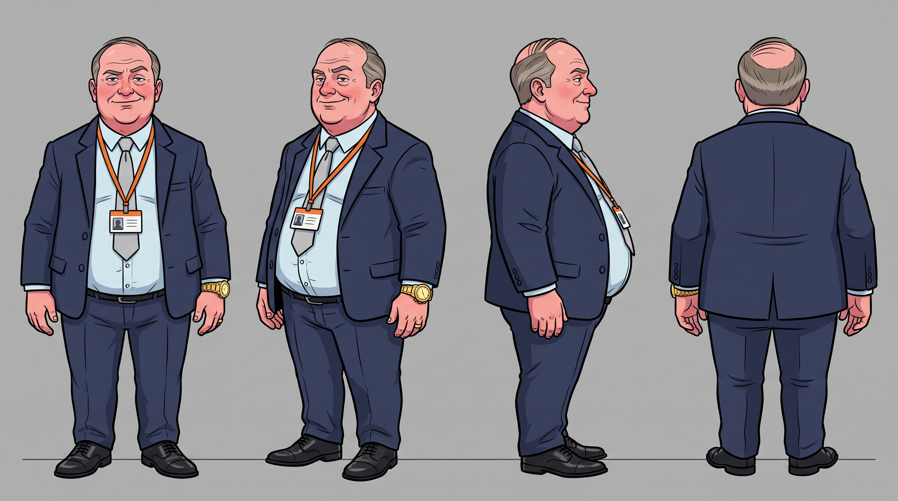
Archived photoreal sheet — spec reference only, do not generate from it

Physical breakdown for building a consistent AI-generated image set. Reuse the description verbatim across shots so the same "actor" reads consistently from image to image.
- Age / build
- 52 years old, 5'10", soft overweight build — noticeable gut straining his shirt buttons, rounded shoulders, soft hands
- Face
- Round, jowly face with the start of a double chin; thin-lipped mouth set in a default smug half-smile
- Hair
- Thinning mid-brown hair greying at the temples, side-parted and combed over a receding hairline, visibly product-slicked
- Eyes / brows
- Small, pale blue-grey eyes; thick eyebrows permanently half-raised in self-satisfaction, narrowing when irritated
- Complexion
- Pale, ruddy British complexion that reddens deeply and sweats visibly under stress; clean-shaven with a five-o-clock shadow by end of day
- Wardrobe (default)
- Slightly-too-tight dark navy two-button suit, white dress shirt, top button often undone with tie loosened, polished but scuffed black shoes, oversized flashy wristwatch, wedding ring
- Signature props
- Phone constantly in hand, Prism-branded lanyard/ID badge, Prism-branded coffee mug
- Default posture
- Chest out, chin up, hands on hips or fingers steepled when holding court; when angry — red-faced, neck veins visible, finger jabbing, sweat sheen
Ten reference shots to generate
- Master reference — full-body neutral standing portrait, arms crossed, smug half-smile, three-quarter angle, office backdrop
- Headshot — close-up head-and-shoulders, neutral corporate lighting, front-facing
- At his desk — sitting behind desk, leaning back, hands behind head, feet up
- Mid-lecture — one arm raised pointing at an unseen audience, mouth open mid-sentence
- Shouting — close-up, red-faced, neck veins bulging
- Flustered — sweating, tie loosened, top button undone, cuffs being unbuttoned
- Throwing the chair — full-body action pose, mid-swing, jacket flaring
- Corridor walk — full-body, striding down an office corridor, phone to ear, chin up
- Tasered — slumped unconscious on the floor, one arm splayed, shirt untucked
- "Make it so" — seated at the head of a meeting table, self-satisfied grin, one fist half-raised
Christina Dross
Comms / staff-engagement lead
- Age
- 30s–40s
- First seen
- Scene 1 — pitches "breakfast meetings" to Jan
- Wardrobe
- Sharp, composed office wear
- Register
- Calm on the surface, dry underneath
Personality & voice
The only character who's actually thinking two steps ahead. Pitches Jan a "communication" idea that's really a plan to sugar-drug the staff into compliance — and later has the canteen team load the pastries with more sugar than anyone's comfortable with. Answers Jan's outbursts with a flat deadpan rather than pushing back.
Key relationships
Reports to Jan, absorbs his tantrums without flinching, quietly runs circles around him.
Arc
Sets the "sugar the staff" plan in motion in scene 1; it's her oversized pastry order that empties out before Jan gets one, the spark for his canteen meltdown. Whether that's a happy accident or not is a nice ambiguity to play with in blocking.
Notable lines
"Well every two weeks on a Friday we do a 'breakfast meeting' and offer some pastries... loaded with as much sugar as humanly possible..."
"Made Up Place?"
Talking head — mock documentary
"My job title is Communications and Staff Engagement Lead. What that actually means is I find ways to make people do what Jan wants without them realising Jan is the reason they're miserable. It's not complicated. Pastries help. Sugar helps more." — to camera, level gaze, hands clasped on desk
"He quoted Star Trek at me. In a meeting. Unironically. I just — [slight pause] — no, I'm not going to say what I was thinking. I'll just say I've updated my CV three times this month." — to camera, one perfectly still blink
"Do I feel guilty about the sugar content in those pastries? No. They're pastries, not a controlled substance. If anything, I'm providing a public service. An hour of mild euphoria is the least this company owes these people after a Jan Peach all-hands." — to camera, faint half-smile, phone face-down on table
Shoot notes — real office
Same meeting room as Jan for scene 1. Doesn't appear again after she's dismissed — no canteen or crowd scene blocking needed for her.
Voice profile
- Vocal quality
- Feminine alto — smooth, controlled, with a naturally low resonance that never wavers; the kind of voice that sounds quieter than it is because it doesn't need volume
- Accent / dialect
- Clear British London RP — crisper and more neutral than Jan's; no regional colour, corporate-polished to the point of deliberate anonymity
- Delivery style
- Measured, unhurried, deadpan — treats every sentence like a press statement she's already rehearsed. Sarcasm is delivered completely straight; the joke is in the content, never the tone ("Made Up Place?" lands precisely because her voice doesn't change)
- Emotional range
- Almost none on the surface — cold competence → faint amusement → dry disgust, all micro-adjustments. She never raises her voice even when Jan is screaming at her; the contrast is the performance
- Pacing
- Steady and even — no rushed words, no pauses for emphasis, just an inexorable conversational metronome. The "sugar plan" pitch is delivered like a quarterly report
- Verbal tics
- Mirrors corporate jargon back at Jan just enough to keep him listening; drops the mask for exactly one beat of heavy sarcasm ("Shockingly no") before snapping back
- Performance notes
- She's the still point of the scene — everyone else orbits her emotionally. The audience should be unsure whether she's genuinely loyal or quietly sabotaging Jan. Voice must stay level enough to support either reading
TTS engine instruct (Qwen3-TTS)
gender: Female. age: 38 years old adult female. pitch: Feminine alto voice. speed: Measured, unhurried, steady. emotion: Cold, deadpan, calm female speaker. personality: Sharp female corporate strategist. accent: Clear British London RP female.
Visual reference — cartoon model sheet CURRENT
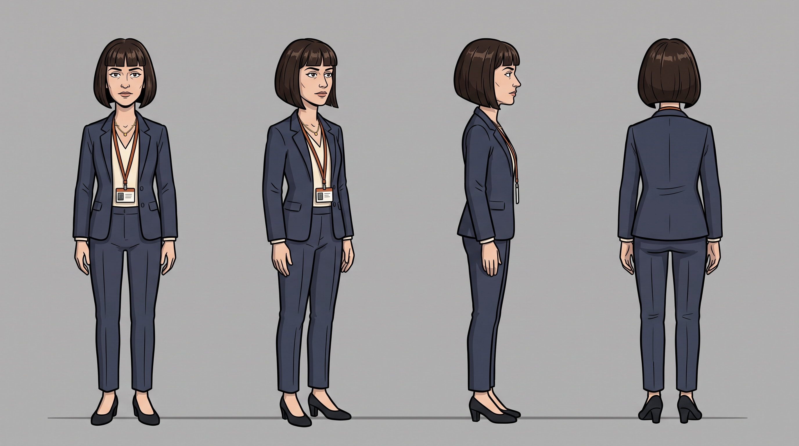
Archived photoreal sheet — spec reference only, do not generate from it

Physical breakdown for building a consistent AI-generated image set. Reuse the description verbatim across shots so the same "actor" reads consistently from image to image.
- Age / build
- 38 years old, 5'6", slim, upright build with squared shoulders
- Face
- Oval face, sharp cheekbones, composed neutral default expression with a faint knowing half-smile
- Hair
- Sleek dark brown bob, blunt fringe or crisp side part, always neatly set — never out of place
- Eyes / brows
- Dark brown eyes, sharp assessing gaze; neatly shaped brows that rarely move even when Jan is shouting
- Complexion
- Light olive complexion, even and unflushed — visibly the calmest person in any room
- Wardrobe (default)
- Tailored charcoal or navy blazer over a cream blouse, tailored trousers or pencil skirt, low block heels, minimal gold jewellery, Prism lanyard
- Signature props
- Tablet or clipboard with "staff engagement" notes, travel mug, phone face-down on the table
- Default posture
- Hands clasped or one hand resting on hip; slight head tilt when delivering a dry line; stays still and level while others react around her
Reference shots to generate
- Master reference — full-body neutral standing portrait, hands loosely clasped, three-quarter angle, office backdrop
- Headshot — close-up head-and-shoulders, composed expression, front-facing
- Pitching — leaning slightly forward across the meeting table, tablet in hand, persuasive half-smile, addressing Jan off-frame
- Deadpan reaction — close-up, flat unimpressed expression while shouting happens off-frame
- Corridor walk — full-body, brisk purposeful stride, clipboard under one arm
- Dismissed — three-quarter rear view leaving the room, unreadable expression
Sharon Enfield
Staff — department unspecified
- First seen
- Scene 2 — barges into Jan's office
- Wardrobe
- Put-together going in, visibly dishevelled coming out
- Screen time
- Brief — one scene, implied off-screen
Personality & voice
Transactional and entirely unbothered by workplace propriety. States what she wants plainly and gets it — including the rest of the day off. Everyone else clocks the affair instantly; she doesn't seem to care that they do.
Key relationships
Having an affair with Jan; the subject of open office gossip (Chris and Rick both notice and comment).
Notable lines
"I hear Christina is doing breakfast meetings now."
"Well I have needs too Jan that must be met."
Talking head — mock documentary
"Look, I'm a very practical person. Jan has certain things I want — flexibility, time off, the good parking space. I have certain things Jan wants. It's a transaction. I don't see why everyone makes it more complicated than that." — to camera, shrug, adjusting hair casually
"Do people talk about it? Probably. Do I care? I got half-day Fridays for the rest of the quarter, so — no. Not really. Chris gives me that look in the corridor sometimes. I just smile at him. He doesn't know what to do with that." — to camera, unbothered smile, leaning back
Shoot notes — real office
Everything explicit happens behind a closed door with the blinds down — easy to shoot tastefully as a door-close / time-cut. All you need on camera is her walking in composed and leaving dishevelled a "few minutes" later.
Flag: affair implication — handled off-screen, see production notesVoice profile
- Vocal quality
- Warm, confident adult female alto — full-bodied with a natural richness; carries effortlessly without projection, the voice of someone who's never had to raise it to get what she wants
- Accent / dialect
- Welsh accent with a subtle natural lilt — not broad Valleys, more of a soft South Wales sing-song that colours vowels and makes even transactional demands sound almost musical
- Delivery style
- Unhurried, transactional, blunt — states what she wants the way you'd order a coffee. No flirtation in the voice; the innuendo lives in the words, not the performance ("Well I have needs too Jan that must be met" is delivered flat, not coyly)
- Emotional range
- Level → unbothered → faintly amused. She doesn't do embarrassment; when colleagues clock the affair, her voice doesn't waver. The tone throughout is practical rather than emotional
- Pacing
- Unhurried with a natural Welsh cadence — sentences rise and fall melodically but never speed up, even when she's making a demand; comfortable silence sits easily in her delivery
- Verbal tics
- Drops oblique references to Jan's obligations without ever being explicit; uses "well" as a casual lead-in that implies she's already decided the outcome before the conversation started
- Performance notes
- The voice should read as entirely in control — the comedy comes from how little effort she puts in compared to how rattled everyone else is. Keep it breezy and level; the Welsh lilt does the charm work naturally
TTS engine instruct (Qwen3-TTS)
gender: Female. age: 34 years old adult female. pitch: Warm, confident adult female alto voice. speed: Unhurried, transactional, blunt pacing. emotion: Level, unbothered, confident female speaker. personality: Plain-spoken opportunist. accent: Welsh adult female accent with a subtle natural lilt.
Visual reference — cartoon model sheet CURRENT
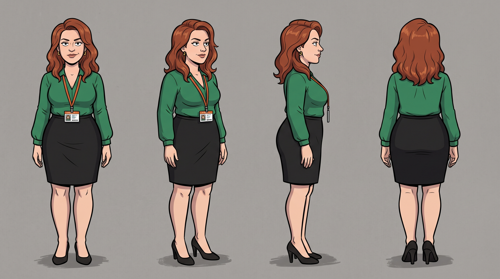
Archived photoreal sheet — spec reference only, do not generate from it

Physical breakdown for building a consistent AI-generated image set. Reuse the description verbatim across shots so the same "actor" reads consistently from image to image.
- Age / build
- 34 years old, 5'5", curvy build
- Face
- Heart-shaped face, full lips, confident level gaze; default expression is an unbothered half-smile
- Hair
- Shoulder-length wavy auburn hair, worn loose or half-up when composed
- Eyes / brows
- Green eyes, arched expressive brows that lift into a smirk rather than embarrassment
- Complexion
- Fair complexion, cheeks flush easily
- Wardrobe (composed)
- Fitted jewel-tone blouse, pencil skirt, heels, hair and makeup neatly done, Prism lanyard
- Wardrobe (dishevelled)
- Same outfit — blouse untucked or buttons slightly askew, hair mussed, heels in hand or one shoe off, makeup smudged, no visible urgency
- Signature props
- Phone, small handbag, Prism lanyard
- Default posture
- Unhurried and self-assured; dishevelled state stays relaxed rather than flustered — smoothing her hair, not smoothing her story
Reference shots to generate
- Master reference — full-body, composed outfit, confident standing pose, three-quarter angle
- Headshot — composed, confident half-smile, front-facing
- Barging in — mid-stride entering the office, purposeful expression, composed wardrobe
- Dishevelled exit — leaving the office, mussed hair, straightening blouse, unbothered smile
- Reaction shot — close-up, amused and unfazed while colleagues clock the affair
Chris
Staff — rank and file
- First seen
- Scene 3 — staff gather round Jan
- Wardrobe
- Ordinary office wear, no special notes
- Register
- Deadpan, quick with a jab
Personality & voice
The office's designated smart mouth — lands the "Inception" joke, needles Jan in front of the crowd, and is the one who calmly checks whether Jan's actually dead after the taser hits. Unfazed by almost everything.
Key relationships
Working alongside Rick as the two most switched-on people in the room; happy to mock Jan to his face.
Notable lines
"You're dreaming Jan." / "Inception is the name of a film about dreams Jan."
"Have you killed him?"
Talking head — mock documentary
"'Project Inception.' He actually said that. Out loud. To a room full of people. And he'd already ordered a thousand stress balls. A thousand. I almost felt sorry for him. Almost. Then he gave himself a fifty-grand pay rise and the moment passed." — to camera, smirking, arms crossed
"The thing about Jan is, he genuinely doesn't know. Like, he really, truly believes he's good at this. That's the bit that gets me. I've worked for bad bosses before — at least they knew they were bad. Jan thinks he's Picard. He's not even Wesley." — to camera, leaning forward, half-laugh
"Did I think Rick was actually going to taser him? Honestly? I thought about it for a second and my only question was 'what took you so long.' Then I checked if he was breathing. He was. Shame." — to camera, deadpan, sipping coffee
Shoot notes — real office
Needs to read clearly in a crowd shot in scene 3 (open desk area works well) and get a clean coverage shot in the canteen for the closing beat.
Voice profile
- Vocal quality
- Conversational British baritone — natural, relaxed, not especially deep but warm enough to carry a room; the kind of voice that makes a smartarse comment sound like a reasonable observation
- Accent / dialect
- Dry South London Estuary English — dropped t-glottals, relaxed vowels, feels mates-down-the-pub rather than corporate. Contrast with Jan's RP is deliberate and comic
- Delivery style
- Quick-witted, deadpan, sarcastic — drops punchlines like casual asides; the "Inception" joke lands because it's thrown away, not set up. Never performs outrage; his amusement is always wry and understated
- Emotional range
- Amused → snarky → curious (never worried). Even crouching over the unconscious Jan, the voice is more "huh, that's interesting" than alarmed. The comedy lives in the gap between the situation's gravity and his total lack of concern
- Pacing
- Quick and sharp — gets in, lands the line, gets out. No padding, no filler words; timing is everything. Slightly faster than natural conversation, giving a rat-a-tat comedy rhythm
- Verbal tics
- Addresses Jan by name at the end of sentences like a disappointed teacher ("You're dreaming, Jan"); uses rhetorical questions that aren't really questions ("Have you killed him?" is genuine curiosity but delivered like a quip)
- Performance notes
- Chris is the audience surrogate — the one who says what everyone's thinking. The voice should feel effortless and natural; if it sounds like he's trying to be funny, it's wrong. Every line should land like it just occurred to him
TTS engine instruct (Qwen3-TTS)
gender: Male. age: 32 years old young adult male. pitch: Conversational British baritone voice. speed: Quick-witted, casual, sharp pacing. emotion: Sarcastic, deadpan, amused male speaker. personality: Office smart-mouth and comic relief. accent: Dry South London Estuary British accent.
Visual reference — cartoon model sheet CURRENT
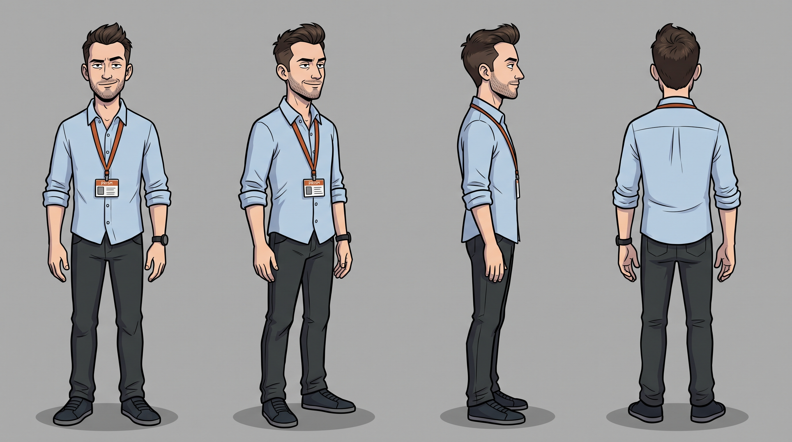
Archived photoreal sheet — spec reference only, do not generate from it

Physical breakdown for building a consistent AI-generated image set. Reuse the description verbatim across shots so the same "actor" reads consistently from image to image.
- Age / build
- 32 years old, 5'11", lean build
- Face
- Angular face, quick smirk that's basically his resting expression
- Hair
- Short, textured dark hair
- Eyes / brows
- Dark eyes, one eyebrow habitually cocked half-raised
- Complexion
- Medium, even complexion
- Wardrobe (default)
- Casual-smart office wear — shirt untucked or sleeves rolled, no tie, Prism lanyard, casual shoes or sneakers
- Signature props
- Coffee cup, phone, a "Project Inception" branded stress ball
- Default posture
- Slouched or leaning against something, arms crossed, deadpan half-grin, never visibly rattled
Reference shots to generate
- Master reference — full-body, arms crossed, leaning stance, three-quarter angle
- Headshot — smirking, front-facing
- Cracking the joke — one hand raised mid-gesture, mouth open mid-line, crowd context
- Crowd shot — standing among the staff group in scene 3, arms crossed, amused
- Canteen check-in — crouched over unconscious Jan, curious deadpan expression
Rick
Staff — rank and file
- First seen
- Scene 3 — calls out the last failed project
- Wardrobe
- Ordinary office wear
- Key prop
- Taser (his own, unexplained)
Personality & voice
The realist of the group — points out that the "previous project" is actually still failing, out loud, in front of everyone. Blunt rather than showy. Turns out to be carrying a taser "for this place," which he uses without much hesitation once Jan starts throwing furniture.
Key relationships
Works alongside Chris; ends the episode as the one person who actually de-escalates Jan.
Notable lines
"What happened to the last project for this, isn't it ongoing? By that I mean completely failing."
"No relax, he will be out for a while. I knew this Taser would come in useful one day in this place. I think we need the police here…"
Talking head — mock documentary
"Why do I carry a taser to work? [long pause] Have you met Jan?" — to camera, flat stare, arms crossed
"The last project cost four hundred thousand pounds and delivered nothing. This one will cost more and also deliver nothing. The only difference is this one's called Inception and comes with stress balls. I'll keep one. Might need it." — to camera, slow blink, zero expression
"People ask if I feel bad about the taser. I don't. He was throwing furniture at people. I neutralised the threat. Filled in an incident form afterwards. HR said they'd 'look into it.' They also said that about the last three things I reported, so I imagine nothing will happen. As usual." — to camera, monotone, slight shrug
Shoot notes — real office
The taser hit is the episode's button — needs a prop taser (non-functional) and a rehearsed fall for whoever plays Jan. Don't use a real device.
Flag: taser gag — prop only, see production notesVoice profile
- Vocal quality
- Deep, gravelly bass-baritone — low rumble that sits in the chest; sounds like it's been weathered by decades of not being impressed by anything. The voice equivalent of arms crossed and feet planted
- Accent / dialect
- Flat Midlands / East Anglian — unhurried, vowels slightly flattened, no regional flourishes; deliberately unplaceable, the accent of someone who's been everywhere and cared about none of it
- Delivery style
- Slow, deliberate, monotone — every word is weighed and found adequate but not exciting. States facts and observations without editorialising; even "I knew this Taser would come in useful" is delivered like he's describing the weather
- Emotional range
- Flat → slightly less flat. Rick does not do emotional variation. The comedy is structural — he tasers a colleague and his voice doesn't change register at all. "No relax" is genuinely reassuring in the same tone you'd use for "pass the milk"
- Pacing
- Slow and deliberate — leaves gaps between phrases, never rushes, never fills silence. The anti-Jan: where Jan accelerates into chaos, Rick decelerates everything around him by sheer vocal inertia
- Verbal tics
- Drops blunt truth-bombs without preamble ("By that I mean completely failing"); uses "no relax" as a standalone reassurance with zero urgency; speaks in short, declarative sentences with no subordinate clauses
- Performance notes
- Rick is the episode's full stop — literally ends it. The voice must be unshakeable from first appearance to last. The taser scene works because there's zero escalation in his delivery; he neutralises Jan the same way he'd unplug a jammed printer
TTS engine instruct (Qwen3-TTS)
pitch: Deep, gravelly bass-baritone. speed: Slow, deliberate monotone. emotion: Flat, unhurried. personality: Blunt realist, unblinking Taser operator. accent: Flat Midlands / East Anglian.
Visual reference — cartoon model sheet CURRENT
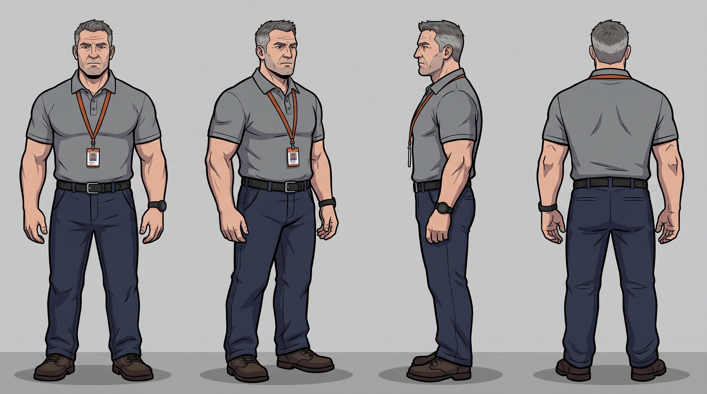
Archived photoreal sheet — spec reference only, do not generate from it

Physical breakdown for building a consistent AI-generated image set. Reuse the description verbatim across shots so the same "actor" reads consistently from image to image.
- Age / build
- 40 years old, 6'0", sturdy/broad build
- Face
- Square jaw, weathered no-nonsense expression, rarely surprised
- Hair
- Short greying hair, near-buzzcut
- Eyes / brows
- Steady, unblinking gaze; flat brows that don't move even when tasering a co-worker
- Complexion
- Ruddy, weathered complexion
- Wardrobe (default)
- Plain button-down or polo shirt, sleeves rolled, sturdy trousers, practical shoes, Prism lanyard
- Signature props
- Taser (concealed by default, drawn in scene 4 — visibly fake/prop version only), phone
- Default posture
- Arms crossed, feet planted, blunt and unbothered — treats a workplace taser incident as a Tuesday
Reference shots to generate
- Master reference — full-body, arms crossed, feet planted, three-quarter angle
- Headshot — flat, unimpressed expression, front-facing
- Calling it out — one hand raised pointing, blunt expression, crowd context
- Drawing the taser — action pose, prop taser raised, focused expression
- Standing over Jan — looking down at unconscious Jan, taser lowered, calm
- On the phone — phone to ear, weary "we need the police here" expression
Canteen worker
Unnamed — one line
- First seen
- Scene 4 — canteen
- Lines
- 1
Function
Delivers the line that lights Jan's fuse — simply out of pastries. Any extra or crew member can cover this; no distinguishing traits given in the script.
Notable line
"Sorry, all gone."
Talking head — mock documentary
"Christina told us to put extra sugar in. We put extra sugar in. Then she said put more in. So we did. I've been doing this job eleven years and I've never seen anyone eat a pain au chocolat and visibly vibrate before. But here we are." — to camera, behind counter, wiping hands on apron
Voice profile
- Vocal quality
- Neutral, unremarkable — any natural adult speaking voice; this is a one-line walk-on and the voice should blend into the background of a working canteen
- Accent / dialect
- No specific accent required — whichever feels natural for the performer; mild and unobtrusive
- Delivery style
- Apologetic, matter-of-fact — a simple "sorry, all gone" delivered as a routine customer-service shrug, not a dramatic beat. The drama comes entirely from Jan's reaction, not from this line
- Pacing
- Quick — the line is two words and a sorry; say it and step back
- Performance notes
- The canteen worker is the match, not the explosion. Keep the delivery completely ordinary — the comedy is in the absurd disproportion between this tiny moment and Jan's nuclear meltdown that follows
Visual reference — cartoon model sheet CURRENT
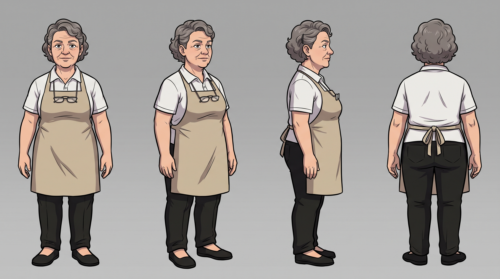
Now cast as Maureen, 58 — she recurs across F47, F48 and F51, so she needed a fixed design rather than a generic extra. Beige apron over a white polo, short greying curly hair pinned back, reading glasses on a chain.
- Age / build
- Adult, average build — no age or build specified in script
- Wardrobe
- Canteen apron over plain shirt, hairnet if hair is long, generic blank name badge
- Signature props
- Serving tongs, empty pastry tray
- Default posture
- Standing behind the counter, slight apologetic shrug
Reference shots to generate
- Master reference — standing behind the canteen counter, apron, neutral expression
- Delivering the line — gesturing to the empty tray, apologetic shrug
Supporting cast — background & walk-on roles
These five never had reference sheets. They recur across the open-plan crowd scenes (F27–F46) and the canteen (F47–F61), so fixing their designs stops the background re-casting itself shot to shot. All follow the same cartoon style anchor and carry the burnt-orange PRISM lanyard.
Gemma Ashcroft · Receptionist, front of house
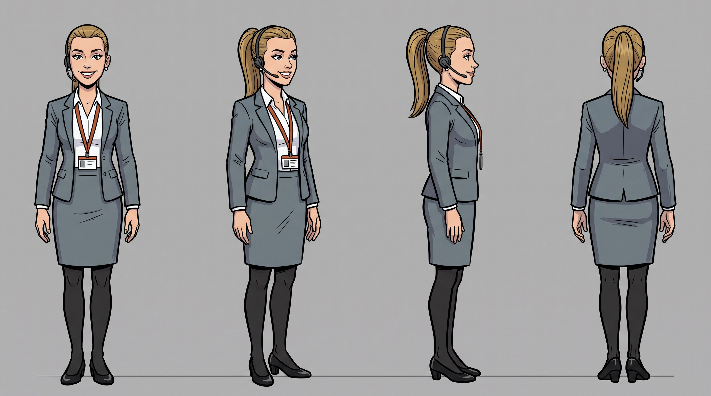
26 · 170cm · slim · sleek dark blonde high ponytail · polished customer-service smile. White blouse, slate-grey blazer and pencil skirt, black low heels, telephone headset. Works the reception atrium.
Priya Raghavan · Office staff
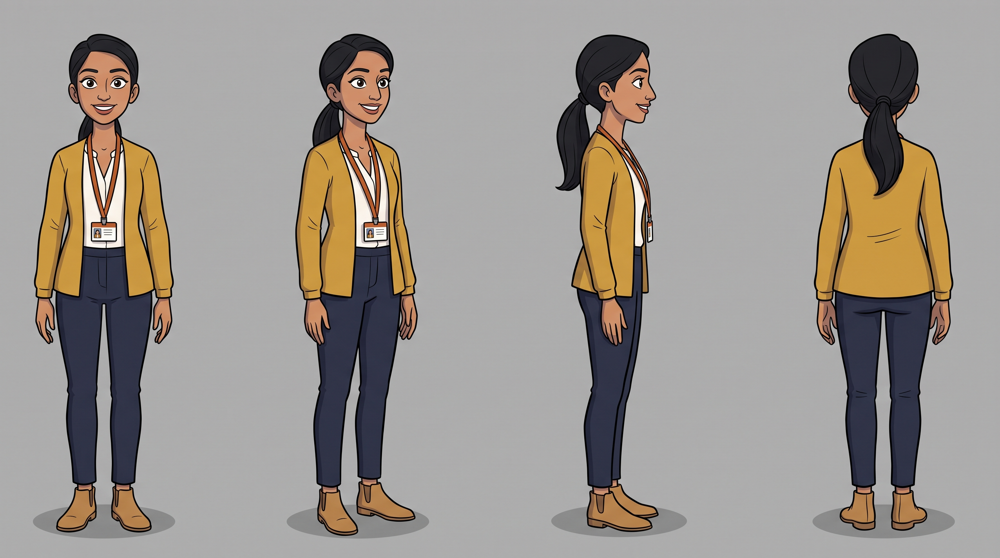
29 · British Indian · 164cm · slim · long dark hair in a low ponytail · bright, alert. Mustard cardigan over a white blouse, navy trousers, tan ankle boots.
Barbara Whitlock · Senior administrator
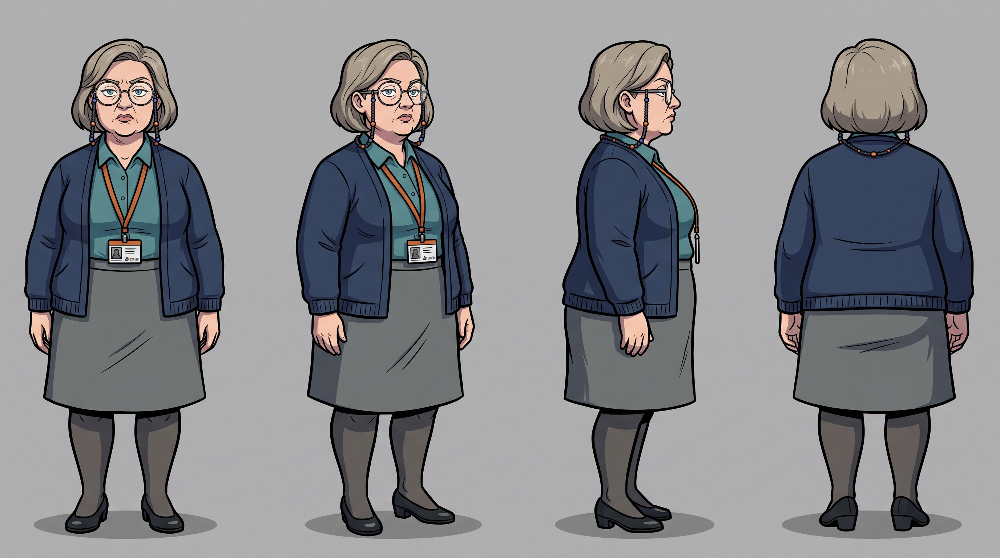
55 · 160cm · short, round · ash-blonde greying bob · large round glasses on a beaded chain · sceptical, pursed. Teal blouse, navy cardigan, grey A-line skirt. Good value in the groan and snigger beats.
Dev Osei · Junior data analyst
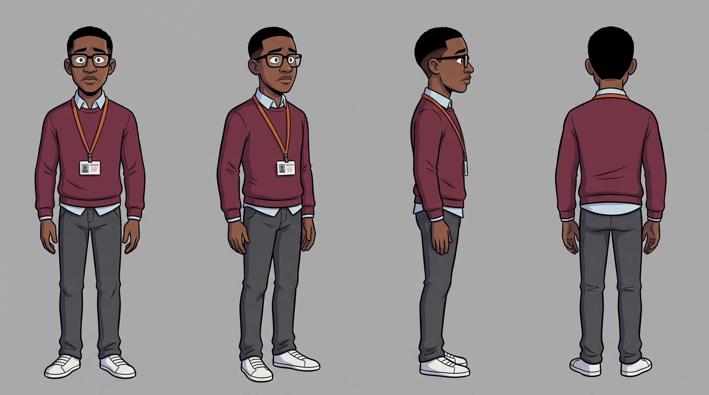
26 · Black British · 178cm · slim · short cropped hair · thick black-rimmed glasses · earnest, slightly nervous. Burgundy jumper over a pale blue collared shirt, dark grey chinos, white trainers.
Tomasz Wojcik · Facilities & maintenance
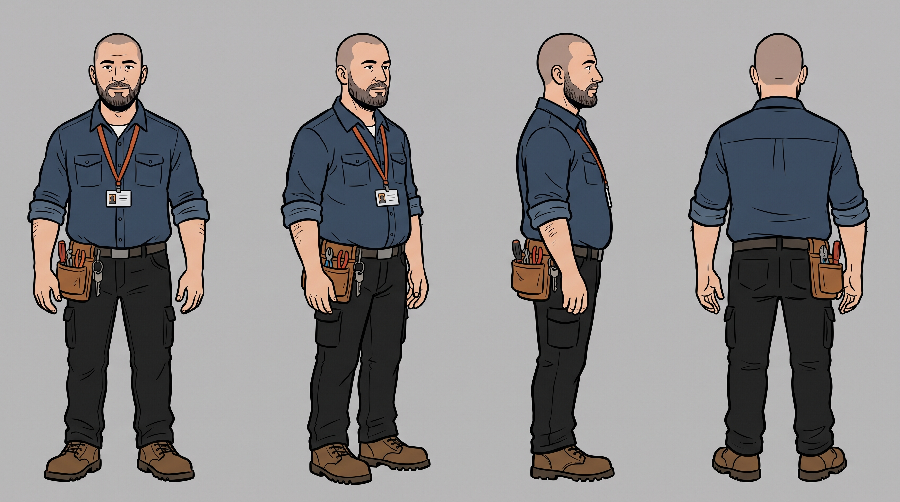
35 · Polish British · 186cm · tall, heavyset · shaved head, short dark beard · calm, unhurried. Dark blue work shirt with sleeves rolled, tool pouch on belt, brown work boots. The obvious person to sweep up the broken china.
General production notes — shooting in a real office
- Locations needed: one meeting room ("Jan's office," ideally with a door and blinds), one open desk area (staff gather-round), one kitchen/break room ("canteen").
- Window smash (scene 4): don't break a real window. Options: cut away before impact and sell it with sound + a stunt pane/breakaway prop, or reframe so the chair hits an off-camera surface and cut to a pre-broken practical panel.
- Taser hit (scene 4): use a visibly fake/prop taser, choreograph Jan's fall on a mat out of frame if needed, and keep the "device" itself brief and off-focus — the reaction sells it.
- Affair beat (scene 2): nothing explicit is required by the script — blinds down, door closed, then cut to Sharon leaving dishevelled. Easy to shoot clean.
- Shirt-off gag (scene 1–2): optional depending on how comfortable your cast/office is with it; can be softened (Jan just changes his shirt) without losing the scene's function.
- Props to source: a tray of pastries, a stack of "Project Inception" branded stress balls/pens/t-shirts (worth mocking up simple printed versions for the sight gag in scene 3).